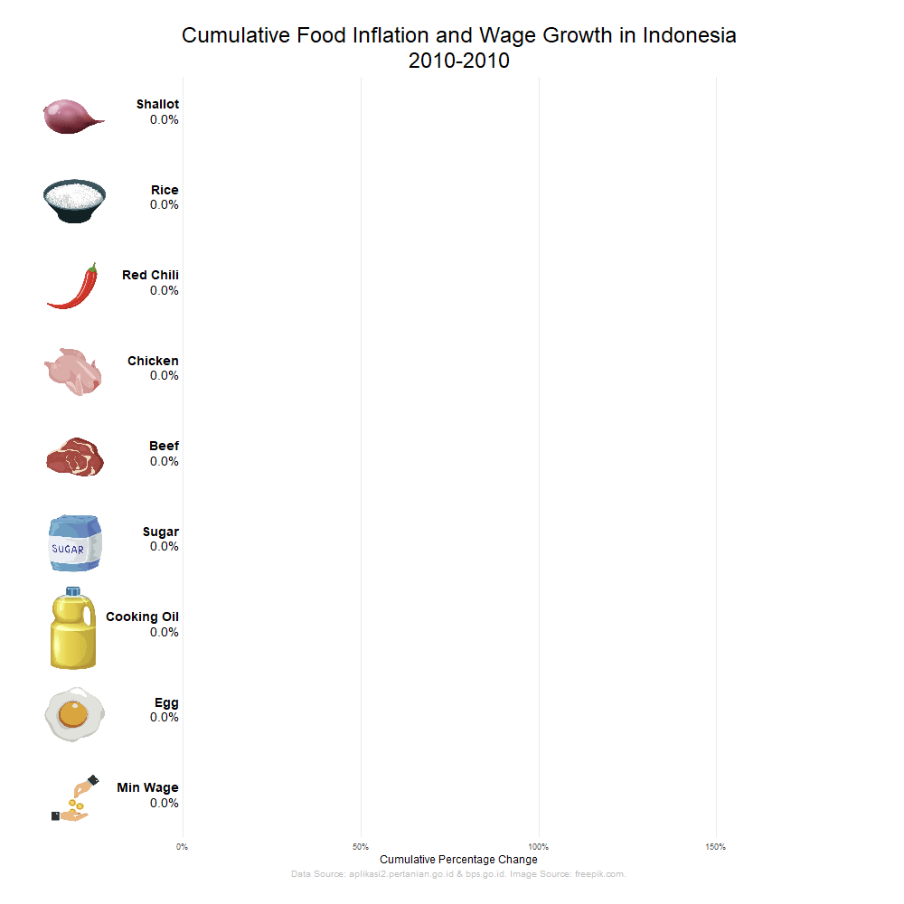

The visualization above shows the cumulative food inflation (change in prices of foods) and wage growth in Indonesia from 2010 to 2021. From the visualization, we can see that the minimum wage in Indonesia had a significant increase compared to the food prices, which means a minimum wage in 2021 had more food purchasing power compared to 2010. The visualization is made with ggplot2 and gganimate, while data preprocessing is done mostly in SQL. The R Notebook is available on my Github.